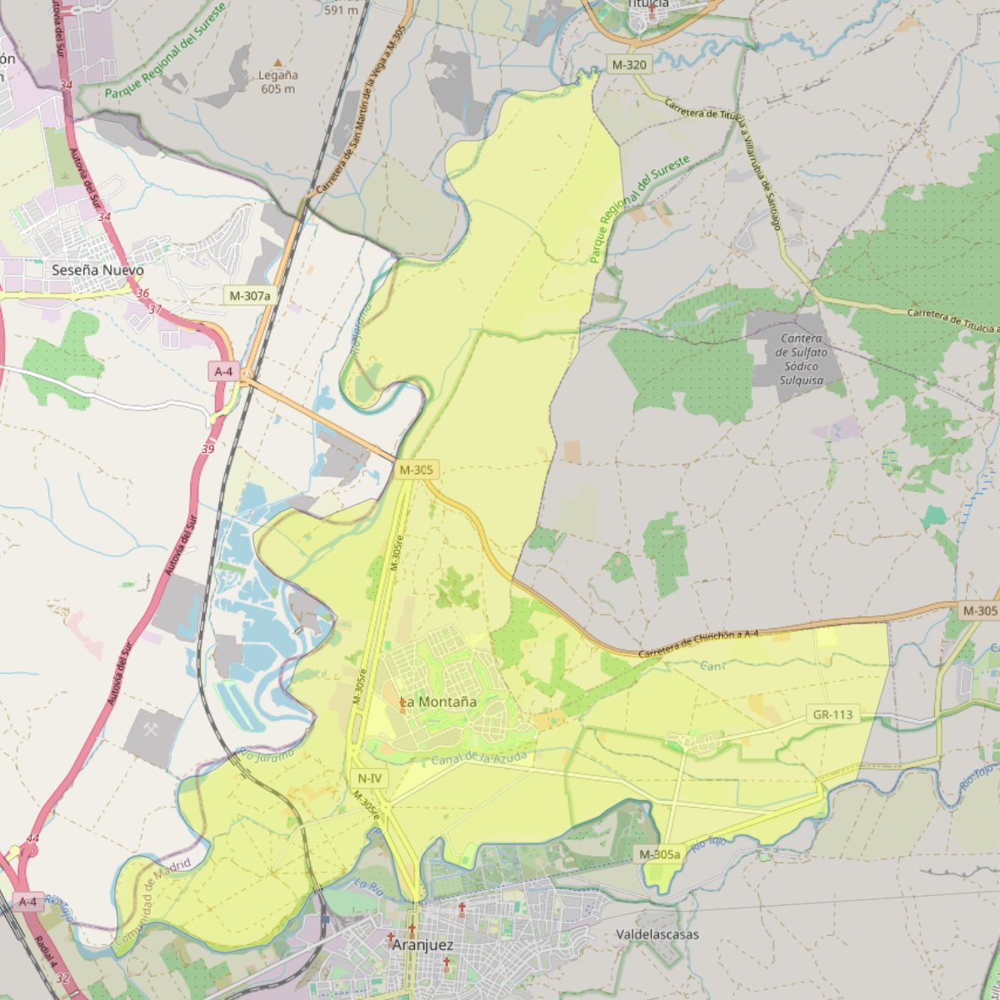

San Rafael Arnaiz y San Isidro

- Arciprestazgo
- Aranjuez
- Población
- Aranjuez
- Dirección postal
- Pza. Mayor 3º. (Real Cortijo de San Isidro)
- Código postal
- 28300
- Extensión
- 38,54 km² (3.854 ha)
- Teléfono
- 679 802 738
Arciprestazgos y parroquias de la Diócesis de Getafe
